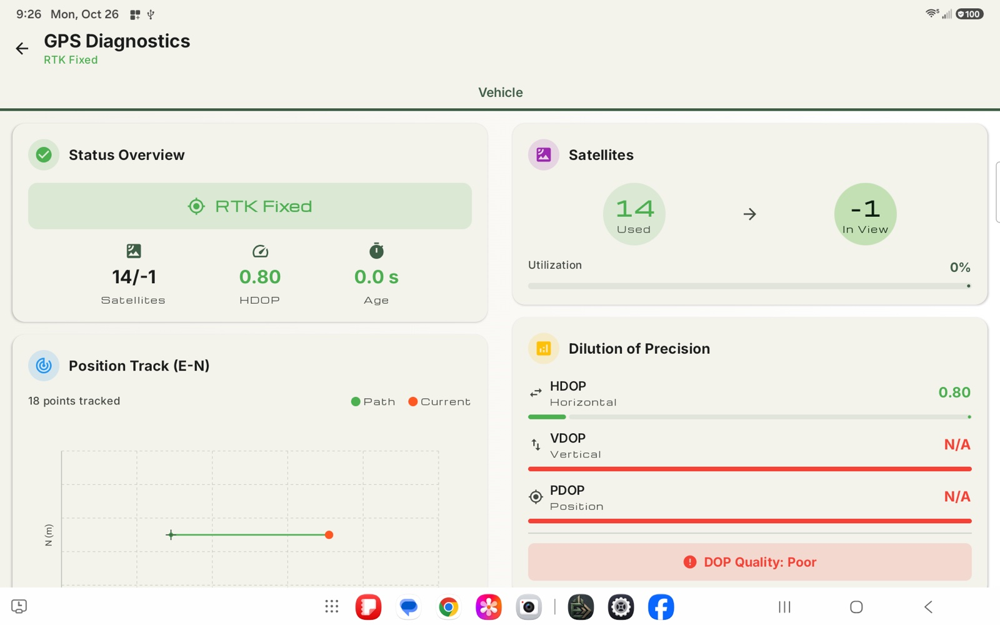
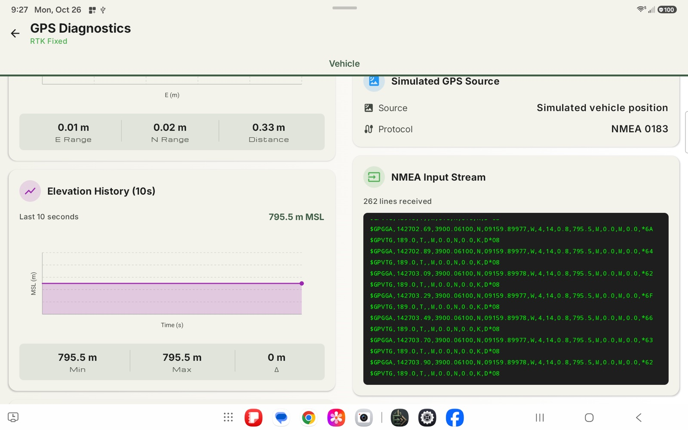
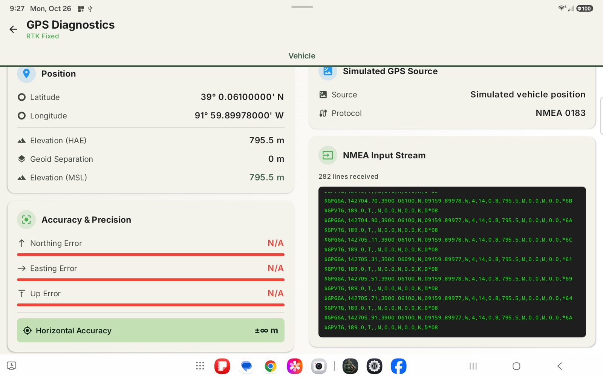
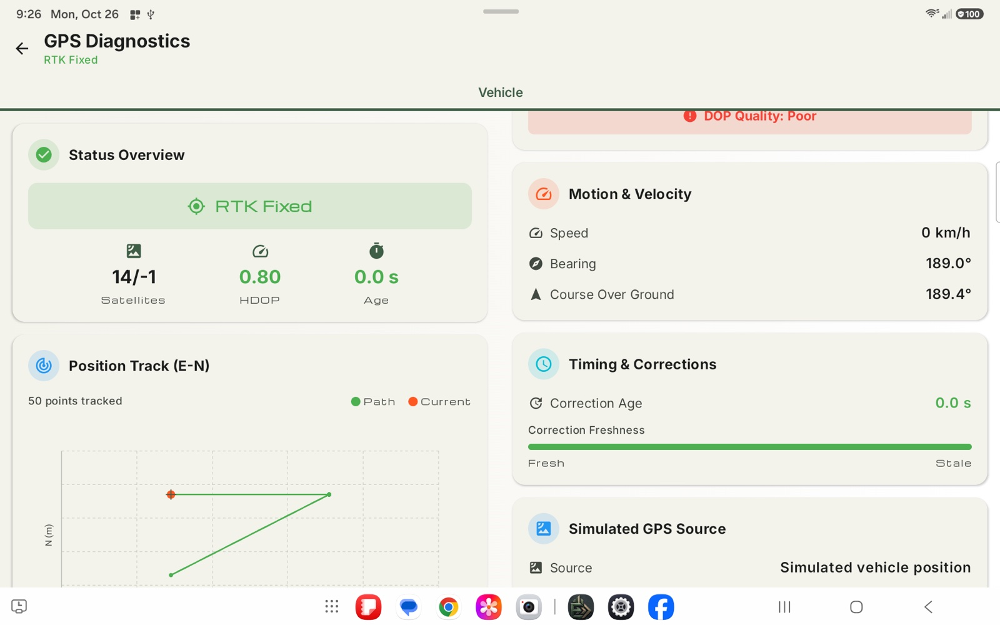
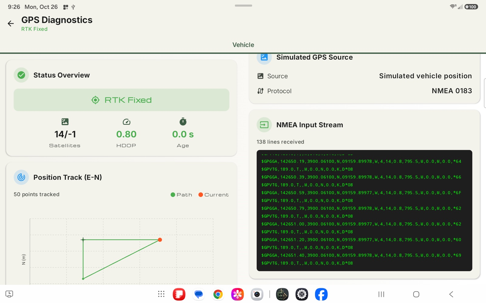

Fix type at a glance
The header shows the current fix in color, such as RTK Fixed in green.
User Manual › GPS Diagnostics
GPS Diagnostics
A read-only window into what your receiver is reporting. Check that corrections are arriving, watch position noise settle, and spot sky obstructions without leaving the app.
The header shows the current fix in color, such as RTK Fixed in green.
Plots show whether a stationary receiver is steady or noisy.
If the age keeps growing, you know corrections have stopped arriving.
With a real receiver, see each satellite and its signal quality.
GPS Diagnostics is a read-only window into what the receiver is reporting. Use it to find out why a fix is poor, or to check that corrections are arriving.
To open it from the run screen, hold the GPS icon in the top bar. Tap the back arrow at the top left to return to the run screen.

The header shows the current fix type in color (for example RTK Fixed in green). A tab under the header selects which receiver to look at: Vehicle, and the rod when the surveyor pole is set up. The two columns scroll separately.
These screenshots were taken in Simulation, so a few fields show N/A, -1 or an infinite accuracy value. A real receiver fills them in.
| Card | What it tells you |
|---|---|
| Status Overview | The fix type, the number of satellites used and in view, HDOP and the Age of the correction data. |
| Position Track (E-N) | A plot of recent positions, east against north, with the path in green and the current spot in orange. Below it are the east range, north range and total distance covered. A receiver sitting still should show a tiny cluster; a large scatter means a noisy position. |
| Elevation History (10s) | A plot of the last 10 seconds of elevation (mean sea level) with the minimum, maximum and the difference. Use it to see how steady the height is. |
| Position | Latitude and longitude, the elevation above the ellipsoid (HAE), the geoid separation and the elevation above mean sea level (MSL). |
| Accuracy & Precision | The receiver's estimate of its northing, easting and up error, and the overall horizontal accuracy. Smaller is better. |


| Card | What it tells you |
|---|---|
| Satellites | How many satellites are used in the solution out of how many are in view, and the utilization percentage. |
| Dilution of Precision | HDOP (horizontal), VDOP (vertical) and PDOP (position) as bars, with an overall DOP Quality rating. Lower numbers mean the satellites are well spread and the position is more trustworthy. |
| Motion & Velocity | Speed, bearing and course over ground. |
| Timing & Corrections | The correction age and a freshness bar from fresh to stale. If the age keeps growing, corrections have stopped arriving. |
| GPS Source | Where the data comes from (for example Bluetooth, Wi-Fi or simulated vehicle position) and the protocol, NMEA 0183. |
| NMEA Input Stream | The raw sentences the receiver is sending, with a running count of lines received. Useful when talking to support or checking the receiver's output settings. |


With a real receiver that is reporting satellite details, two more cards appear:
| Card | What it tells you |
|---|---|
| Satellite Sky Plot | Where each satellite is in the sky, with the count of visible satellites, the count that report a signal, and the average signal strength. |
| Signal Strength (SNR) | A bar for each satellite, colored Excellent, Good, Fair or Poor. Many poor bars usually mean a sky obstruction, such as trees or a building. |
If no receiver is set up you see No GPS Configured. If the receiver is set up but silent, a message says what it is waiting for, such as Connecting to the GPS source... or Waiting for a position fix...